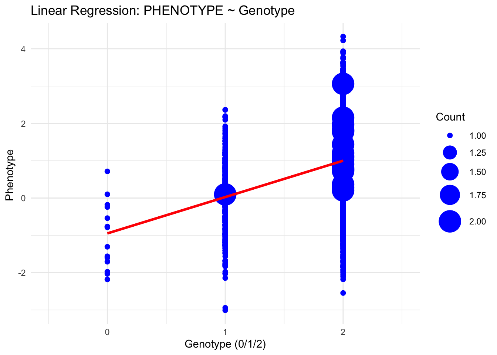
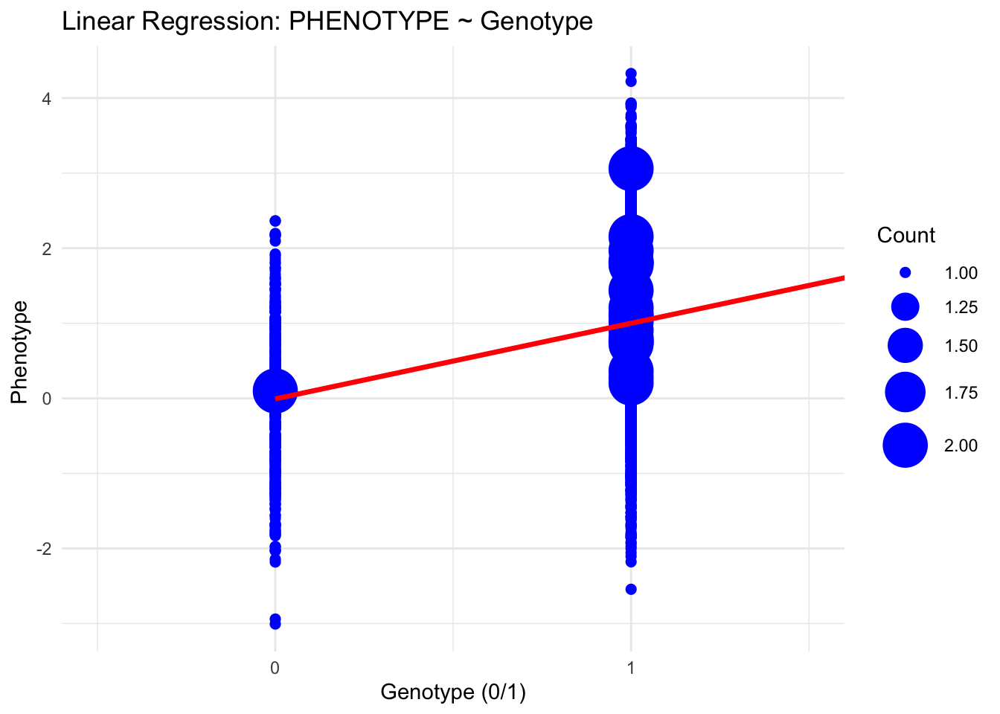

<!DOCTYPE html>
<html xmlns="http://www.w3.org/1999/xhtml" lang="en" xml:lang="en"><head>

<meta charset="utf-8">
<meta name="generator" content="quarto-1.8.27">

<meta name="viewport" content="width=device-width, initial-scale=1.0, user-scalable=yes">


<title>Assignment #1</title>
<style>
code{white-space: pre-wrap;}
span.smallcaps{font-variant: small-caps;}
div.columns{display: flex; gap: min(4vw, 1.5em);}
div.column{flex: auto; overflow-x: auto;}
div.hanging-indent{margin-left: 1.5em; text-indent: -1.5em;}
ul.task-list{list-style: none;}
ul.task-list li input[type="checkbox"] {
  width: 0.8em;
  margin: 0 0.8em 0.2em -1em; /* quarto-specific, see https://github.com/quarto-dev/quarto-cli/issues/4556 */ 
  vertical-align: middle;
}
/* CSS for syntax highlighting */
html { -webkit-text-size-adjust: 100%; }
pre > code.sourceCode { white-space: pre; position: relative; }
pre > code.sourceCode > span { display: inline-block; line-height: 1.25; }
pre > code.sourceCode > span:empty { height: 1.2em; }
.sourceCode { overflow: visible; }
code.sourceCode > span { color: inherit; text-decoration: inherit; }
div.sourceCode { margin: 1em 0; }
pre.sourceCode { margin: 0; }
@media screen {
div.sourceCode { overflow: auto; }
}
@media print {
pre > code.sourceCode { white-space: pre-wrap; }
pre > code.sourceCode > span { text-indent: -5em; padding-left: 5em; }
}
pre.numberSource code
  { counter-reset: source-line 0; }
pre.numberSource code > span
  { position: relative; left: -4em; counter-increment: source-line; }
pre.numberSource code > span > a:first-child::before
  { content: counter(source-line);
    position: relative; left: -1em; text-align: right; vertical-align: baseline;
    border: none; display: inline-block;
    -webkit-touch-callout: none; -webkit-user-select: none;
    -khtml-user-select: none; -moz-user-select: none;
    -ms-user-select: none; user-select: none;
    padding: 0 4px; width: 4em;
  }
pre.numberSource { margin-left: 3em;  padding-left: 4px; }
div.sourceCode
  {   }
@media screen {
pre > code.sourceCode > span > a:first-child::before { text-decoration: underline; }
}
</style>


<script src="assignment_1_files/libs/clipboard/clipboard.min.js"></script>
<script src="assignment_1_files/libs/quarto-html/quarto.js" type="module"></script>
<script src="assignment_1_files/libs/quarto-html/tabsets/tabsets.js" type="module"></script>
<script src="assignment_1_files/libs/quarto-html/axe/axe-check.js" type="module"></script>
<script src="assignment_1_files/libs/quarto-html/popper.min.js"></script>
<script src="assignment_1_files/libs/quarto-html/tippy.umd.min.js"></script>
<script src="assignment_1_files/libs/quarto-html/anchor.min.js"></script>
<link href="assignment_1_files/libs/quarto-html/tippy.css" rel="stylesheet">
<link href="assignment_1_files/libs/quarto-html/quarto-syntax-highlighting-ed96de9b727972fe78a7b5d16c58bf87.css" rel="stylesheet" id="quarto-text-highlighting-styles">
<script src="assignment_1_files/libs/bootstrap/bootstrap.min.js"></script>
<link href="assignment_1_files/libs/bootstrap/bootstrap-icons.css" rel="stylesheet">
<link href="assignment_1_files/libs/bootstrap/bootstrap-d6a003b94517c951b2d65075d42fb01b.min.css" rel="stylesheet" append-hash="true" id="quarto-bootstrap" data-mode="light">


</head>

<body class="fullcontent quarto-light">

<div id="quarto-content" class="page-columns page-rows-contents page-layout-article">

<main class="content" id="quarto-document-content">

<header id="title-block-header" class="quarto-title-block default">
<div class="quarto-title">
<h1 class="title">Assignment #1</h1>
</div>


<div class="quarto-title-meta">

    
  
    
  </div>
  


</header>


<section id="assignment-1" class="level2">
<h2 class="anchored" data-anchor-id="assignment-1">Assignment 1</h2>
<p>You only need to write lines of code for each question. When answering questions that ask you to identify or interpret something, the length of your response doesn’t matter. For example, if the answer is just ‘yes,’ ‘no,’ or a number, you can just give that answer without adding anything else.</p>
<p>We will go through comparable code and concepts in the live learning session. If you run into trouble, start by using the help help() function in R, to get information about the datasets and function in question. The internet is also a great resource when coding (though note that no outside searches are required by the assignment!). If you do incorporate code from the internet, please cite the source within your code (providing a URL is sufficient).</p>
<p>Please bring questions that you cannot work out on your own to office hours, work periods or share with your peers on Slack. We will work with you through the issue.</p>
<p>You will need to install PLINK and run the analyses. Please follow the OS-specific setup guide in <a href="../../SETUP.md"><code>SETUP.md</code></a>. PLINK is a free, open-source whole genome association analysis toolset, designed to perform a range of basic, large-scale analyses in a computationally efficient manner.</p>
<div class="cell">
<div class="code-copy-outer-scaffold"><div class="sourceCode cell-code" id="cb1"><pre class="sourceCode r code-with-copy"><code class="sourceCode r"><span id="cb1-1"><a href="#cb1-1" aria-hidden="true" tabindex="-1"></a><span class="co"># Set up a consistent path for all chunks of code</span></span>
<span id="cb1-2"><a href="#cb1-2" aria-hidden="true" tabindex="-1"></a>knitr<span class="sc">::</span>opts_knit<span class="sc">$</span><span class="fu">set</span>(<span class="at">root.dir =</span> <span class="fu">normalizePath</span>(<span class="st">"../../"</span>))</span>
<span id="cb1-3"><a href="#cb1-3" aria-hidden="true" tabindex="-1"></a></span>
<span id="cb1-4"><a href="#cb1-4" aria-hidden="true" tabindex="-1"></a><span class="fu">library</span>(data.table)</span>
<span id="cb1-5"><a href="#cb1-5" aria-hidden="true" tabindex="-1"></a><span class="fu">library</span>(ggplot2)</span>
<span id="cb1-6"><a href="#cb1-6" aria-hidden="true" tabindex="-1"></a><span class="fu">library</span>(seqminer)</span>
<span id="cb1-7"><a href="#cb1-7" aria-hidden="true" tabindex="-1"></a><span class="fu">library</span>(HardyWeinberg)</span></code></pre></div><button title="Copy to Clipboard" class="code-copy-button"><i class="bi"></i></button></div>
<div class="cell-output cell-output-stderr">
<pre><code>Loading required package: mice</code></pre>
</div>
<div class="cell-output cell-output-stderr">
<pre><code>Warning: package 'mice' was built under R version 4.5.2</code></pre>
</div>
<div class="cell-output cell-output-stderr">
<pre><code>
Attaching package: 'mice'</code></pre>
</div>
<div class="cell-output cell-output-stderr">
<pre><code>The following object is masked from 'package:stats':

    filter</code></pre>
</div>
<div class="cell-output cell-output-stderr">
<pre><code>The following objects are masked from 'package:base':

    cbind, rbind</code></pre>
</div>
<div class="cell-output cell-output-stderr">
<pre><code>Loading required package: nnet</code></pre>
</div>
<div class="cell-output cell-output-stderr">
<pre><code>Loading required package: Rsolnp</code></pre>
</div>
<div class="cell-output cell-output-stderr">
<pre><code>Loading required package: shape</code></pre>
</div>
<div class="code-copy-outer-scaffold"><div class="sourceCode cell-code" id="cb10"><pre class="sourceCode r code-with-copy"><code class="sourceCode r"><span id="cb10-1"><a href="#cb10-1" aria-hidden="true" tabindex="-1"></a><span class="fu">library</span>(dplyr)</span></code></pre></div><button title="Copy to Clipboard" class="code-copy-button"><i class="bi"></i></button></div>
<div class="cell-output cell-output-stderr">
<pre><code>
Attaching package: 'dplyr'</code></pre>
</div>
<div class="cell-output cell-output-stderr">
<pre><code>The following object is masked from 'package:HardyWeinberg':

    recode</code></pre>
</div>
<div class="cell-output cell-output-stderr">
<pre><code>The following objects are masked from 'package:data.table':

    between, first, last</code></pre>
</div>
<div class="cell-output cell-output-stderr">
<pre><code>The following objects are masked from 'package:stats':

    filter, lag</code></pre>
</div>
<div class="cell-output cell-output-stderr">
<pre><code>The following objects are masked from 'package:base':

    intersect, setdiff, setequal, union</code></pre>
</div>
</div>
<section id="question-1-data-inspection" class="level4">
<h4 class="anchored" data-anchor-id="question-1-data-inspection">Question 1: Data inspection</h4>
<p>Before fitting any models, it is essential to understand the data. Use R or bash code to answer the following questions about the <code>gwa.qc.A1.fam</code>, <code>gwa.qc.A1.bim</code>, and <code>gwa.qc.A1.bed</code> files, available at the following Google Drive link: <a href="https://drive.google.com/drive/folders/11meVqGCY5yAyI1fh-fAlMEXQt0VmRGuz?usp=drive_link" class="uri">https://drive.google.com/drive/folders/11meVqGCY5yAyI1fh-fAlMEXQt0VmRGuz?usp=drive_link</a>. Please download all three files from this link and place them in <code>02_activities/data/</code>.</p>
<ol type="i">
<li>Read the .fam file. How many samples does the dataset contain?</li>
</ol>
<div class="cell">
<div class="code-copy-outer-scaffold"><div class="sourceCode cell-code" id="cb16"><pre class="sourceCode bash code-with-copy"><code class="sourceCode bash"><span id="cb16-1"><a href="#cb16-1" aria-hidden="true" tabindex="-1"></a><span class="co">#Read the .fam file</span></span>
<span id="cb16-2"><a href="#cb16-2" aria-hidden="true" tabindex="-1"></a><span class="fu">head</span> ./02_activities/data/gwa.qc.A1.fam</span>
<span id="cb16-3"><a href="#cb16-3" aria-hidden="true" tabindex="-1"></a></span>
<span id="cb16-4"><a href="#cb16-4" aria-hidden="true" tabindex="-1"></a><span class="co">#The dataset contains 10 samples.</span></span></code></pre></div><button title="Copy to Clipboard" class="code-copy-button"><i class="bi"></i></button></div>
<div class="cell-output cell-output-stdout">
<pre><code>0   A2001   0   0   1   -0.694438129641973
1   A2002   0   0   1   1.85384536141856
2   A2003   0   0   1   2.08263677761584
3   A2004   0   0   1   2.73871473943968
4   A2005   0   0   1   1.34114035564636
5   A2006   0   0   1   0.416778586749647
6   A2007   0   0   1   2.38297123290054
7   A2008   0   0   1   1.51429928826958
8   A2009   0   0   1   0.718686390529039
9   A2010   0   0   1   2.08904136245205</code></pre>
</div>
</div>
<ol start="2" type="i">
<li>What is the ‘variable type’ of the response variable (i.e.Continuous or binary)?</li>
</ol>
<div class="cell">
<div class="code-copy-outer-scaffold"><div class="sourceCode cell-code" id="cb18"><pre class="sourceCode bash code-with-copy"><code class="sourceCode bash"><span id="cb18-1"><a href="#cb18-1" aria-hidden="true" tabindex="-1"></a><span class="fu">head</span> ./02_activities/data/gwa.qc.A1.fam</span>
<span id="cb18-2"><a href="#cb18-2" aria-hidden="true" tabindex="-1"></a></span>
<span id="cb18-3"><a href="#cb18-3" aria-hidden="true" tabindex="-1"></a><span class="co">#The response variable is continuous.</span></span></code></pre></div><button title="Copy to Clipboard" class="code-copy-button"><i class="bi"></i></button></div>
<div class="cell-output cell-output-stdout">
<pre><code>0   A2001   0   0   1   -0.694438129641973
1   A2002   0   0   1   1.85384536141856
2   A2003   0   0   1   2.08263677761584
3   A2004   0   0   1   2.73871473943968
4   A2005   0   0   1   1.34114035564636
5   A2006   0   0   1   0.416778586749647
6   A2007   0   0   1   2.38297123290054
7   A2008   0   0   1   1.51429928826958
8   A2009   0   0   1   0.718686390529039
9   A2010   0   0   1   2.08904136245205</code></pre>
</div>
</div>
<ol start="3" type="i">
<li>Read the .bim file. How many SNPs does the dataset contain?</li>
</ol>
<div class="cell">
<div class="code-copy-outer-scaffold"><div class="sourceCode cell-code" id="cb20"><pre class="sourceCode bash code-with-copy"><code class="sourceCode bash"><span id="cb20-1"><a href="#cb20-1" aria-hidden="true" tabindex="-1"></a><span class="fu">head</span> ./02_activities/data/gwa.qc.A1.bim</span>
<span id="cb20-2"><a href="#cb20-2" aria-hidden="true" tabindex="-1"></a></span>
<span id="cb20-3"><a href="#cb20-3" aria-hidden="true" tabindex="-1"></a><span class="co">#There are 10 SNPs in the dataset.</span></span></code></pre></div><button title="Copy to Clipboard" class="code-copy-button"><i class="bi"></i></button></div>
<div class="cell-output cell-output-stdout">
<pre><code>1   rs3737728   0   1011278 A   G
1   rs1320565   0   1109721 T   C
1   rs3813199   0   1148140 A   G
1   rs11804831  0   1184667 C   T
1   rs3766178   0   1468043 C   T
1   rs3128342   0   1476697 A   C
1   rs880051    0   1483590 A   G
1   rs2296716   0   1487687 T   C
1   rs2474460   0   1833906 C   T
1   rs3820011   0   1878053 A   C</code></pre>
</div>
</div>
</section>
<section id="question-2-allele-frequency-estimation" class="level4">
<h4 class="anchored" data-anchor-id="question-2-allele-frequency-estimation">Question 2: Allele Frequency Estimation</h4>
<ol type="i">
<li>Load the genotype matrix for SNPs rs1861, rs3813199, rs3128342, and rs11804831 using additive coding. What are the allele frequencies (AFs) for these four SNPs?</li>
</ol>
<div class="cell">
<div class="code-copy-outer-scaffold"><div class="sourceCode cell-code" id="cb22"><pre class="sourceCode bash code-with-copy"><code class="sourceCode bash"><span id="cb22-1"><a href="#cb22-1" aria-hidden="true" tabindex="-1"></a><span class="co">#Create SNP list file with 4 SNPs: rs1861, rs3813199, rs3128342, and rs11804831</span></span>
<span id="cb22-2"><a href="#cb22-2" aria-hidden="true" tabindex="-1"></a><span class="bu">printf</span> <span class="st">"%s\n"</span> rs1861 rs3813199 rs3128342 rs11804831 <span class="op">&gt;</span> ./02_activities/data/A1snplist.txt</span>
<span id="cb22-3"><a href="#cb22-3" aria-hidden="true" tabindex="-1"></a></span>
<span id="cb22-4"><a href="#cb22-4" aria-hidden="true" tabindex="-1"></a><span class="co">#Subset SNPs and output allele frequencies</span></span>
<span id="cb22-5"><a href="#cb22-5" aria-hidden="true" tabindex="-1"></a><span class="ex">plink2</span> <span class="at">--bfile</span> ./02_activities/data/gwa.qc.A1 <span class="dt">\</span></span>
<span id="cb22-6"><a href="#cb22-6" aria-hidden="true" tabindex="-1"></a>      <span class="at">--extract</span> ./02_activities/data/A1snplist.txt <span class="dt">\</span></span>
<span id="cb22-7"><a href="#cb22-7" aria-hidden="true" tabindex="-1"></a>      <span class="at">--recode</span> A<span class="dt">\</span></span>
<span id="cb22-8"><a href="#cb22-8" aria-hidden="true" tabindex="-1"></a>      <span class="at">--freq</span> <span class="dt">\</span></span>
<span id="cb22-9"><a href="#cb22-9" aria-hidden="true" tabindex="-1"></a>      <span class="at">--out</span> ./02_activities/data/gwa_qc_A1_freq</span></code></pre></div><button title="Copy to Clipboard" class="code-copy-button"><i class="bi"></i></button></div>
<div class="cell-output cell-output-stdout">
<pre><code>PLINK v2.00a5.12 M1 (25 Jun 2024)              www.cog-genomics.org/plink/2.0/
(C) 2005-2024 Shaun Purcell, Christopher Chang   GNU General Public License v3
Logging to ./02_activities/data/gwa_qc_A1_freq.log.
Options in effect:
  --bfile ./02_activities/data/gwa.qc.A1
  --export A
  --extract ./02_activities/data/A1snplist.txt
  --freq
  --out ./02_activities/data/gwa_qc_A1_freq

Start time: Mon Mar 16 18:24:17 2026
16384 MiB RAM detected; reserving 8192 MiB for main workspace.
Using up to 10 threads (change this with --threads).
4000 samples (2000 females, 2000 males; 4000 founders) loaded from
./02_activities/data/gwa.qc.A1.fam.
101083 variants loaded from ./02_activities/data/gwa.qc.A1.bim.
1 quantitative phenotype loaded (4000 values).
--extract: 4 variants remaining.
Calculating allele frequencies... 0%0%done.
--freq: 0%0%25%50%75%
--freq: Allele frequencies (founders only) written to
./02_activities/data/gwa_qc_A1_freq.afreq .
4 variants remaining after main filters.

--export A pass 1/1: loading... 0%0%writing... 0%1%2%3%4%5%6%7%8%9%10%11%12%13%14%15%16%17%18%19%20%21%22%23%24%25%26%27%28%29%30%31%32%33%34%35%36%37%38%39%40%41%42%43%44%45%46%47%48%49%50%51%52%53%54%55%56%57%58%59%60%61%62%63%64%65%66%67%68%69%70%71%72%73%74%75%76%77%78%79%80%81%82%83%84%85%86%87%88%89%90%91%92%93%94%95%96%97%98%99% done.
--export A: ./02_activities/data/gwa_qc_A1_freq.raw written.
End time: Mon Mar 16 18:24:17 2026</code></pre>
</div>
</div>
<div class="cell">
<div class="code-copy-outer-scaffold"><div class="sourceCode cell-code" id="cb24"><pre class="sourceCode r code-with-copy"><code class="sourceCode r"><span id="cb24-1"><a href="#cb24-1" aria-hidden="true" tabindex="-1"></a><span class="co">#View allele frequencies</span></span>
<span id="cb24-2"><a href="#cb24-2" aria-hidden="true" tabindex="-1"></a>A1freq <span class="ot">&lt;-</span> <span class="fu">fread</span>(<span class="st">"./02_activities/data/gwa_qc_A1_freq.afreq"</span>)</span>
<span id="cb24-3"><a href="#cb24-3" aria-hidden="true" tabindex="-1"></a><span class="fu">head</span>(A1freq)</span></code></pre></div><button title="Copy to Clipboard" class="code-copy-button"><i class="bi"></i></button></div>
<div class="cell-output cell-output-stdout">
<pre><code>   #CHROM         ID    REF    ALT PROVISIONAL_REF? ALT_FREQS OBS_CT
    &lt;int&gt;     &lt;char&gt; &lt;char&gt; &lt;char&gt;           &lt;char&gt;     &lt;num&gt;  &lt;int&gt;
1:      1  rs3813199      G      A                Y 0.0569126   7942
2:      1 rs11804831      T      C                Y 0.1543410   7924
3:      1  rs3128342      C      A                Y 0.3051210   7928
4:      1     rs1861      C      A                Y 0.0539859   7928</code></pre>
</div>
<div class="code-copy-outer-scaffold"><div class="sourceCode cell-code" id="cb26"><pre class="sourceCode r code-with-copy"><code class="sourceCode r"><span id="cb26-1"><a href="#cb26-1" aria-hidden="true" tabindex="-1"></a><span class="co">#The allele frequencies for rs1861, rs3813199, rs3128342, and rs11804831 are as follows: 0.0539859, 0.0569126, 0.3051210, and 0.1543410.</span></span></code></pre></div><button title="Copy to Clipboard" class="code-copy-button"><i class="bi"></i></button></div>
</div>
<ol start="2" type="i">
<li>What are the minor allele frequencies (MAFs) for these four SNPs?</li>
</ol>
<div class="cell">
<div class="code-copy-outer-scaffold"><div class="sourceCode cell-code" id="cb27"><pre class="sourceCode r code-with-copy"><code class="sourceCode r"><span id="cb27-1"><a href="#cb27-1" aria-hidden="true" tabindex="-1"></a>A1freq<span class="sc">$</span>MAF <span class="ot">&lt;-</span> <span class="fu">pmin</span>(A1freq<span class="sc">$</span>ALT_FREQS, <span class="dv">1</span> <span class="sc">-</span> A1freq<span class="sc">$</span>ALT_FREQS)</span>
<span id="cb27-2"><a href="#cb27-2" aria-hidden="true" tabindex="-1"></a></span>
<span id="cb27-3"><a href="#cb27-3" aria-hidden="true" tabindex="-1"></a>A1freq[, .(ID, <span class="at">AF =</span> ALT_FREQS, MAF)]</span></code></pre></div><button title="Copy to Clipboard" class="code-copy-button"><i class="bi"></i></button></div>
<div class="cell-output cell-output-stdout">
<pre><code>           ID        AF       MAF
       &lt;char&gt;     &lt;num&gt;     &lt;num&gt;
1:  rs3813199 0.0569126 0.0569126
2: rs11804831 0.1543410 0.1543410
3:  rs3128342 0.3051210 0.3051210
4:     rs1861 0.0539859 0.0539859</code></pre>
</div>
<div class="code-copy-outer-scaffold"><div class="sourceCode cell-code" id="cb29"><pre class="sourceCode r code-with-copy"><code class="sourceCode r"><span id="cb29-1"><a href="#cb29-1" aria-hidden="true" tabindex="-1"></a><span class="co">#The minor allele frequencies for rs1861, rs3813199, rs3128342, and rs11804831 are as follows: 0.0539859, 0.0569126, 0.3051210, and 0.1543410.</span></span></code></pre></div><button title="Copy to Clipboard" class="code-copy-button"><i class="bi"></i></button></div>
</div>
</section>
<section id="question-3-hardyweinberg-equilibrium-hwe-test" class="level4">
<h4 class="anchored" data-anchor-id="question-3-hardyweinberg-equilibrium-hwe-test">Question 3: Hardy–Weinberg Equilibrium (HWE) Test</h4>
<ol type="i">
<li>Conduct the Hardy–Weinberg Equilibrium (HWE) test for all SNPs in the .bim file. Then, load the file containing the HWE p-value results and display the first few rows of the resulting data frame.</li>
</ol>
<div class="cell">
<div class="code-copy-outer-scaffold"><div class="sourceCode cell-code" id="cb30"><pre class="sourceCode bash code-with-copy"><code class="sourceCode bash"><span id="cb30-1"><a href="#cb30-1" aria-hidden="true" tabindex="-1"></a><span class="ex">plink2</span> <span class="at">--bfile</span> ./02_activities/data/gwa.qc.A1 <span class="at">--hardy</span> <span class="at">--out</span> ./02_activities/data/gwa_qc_A1_hwe</span></code></pre></div><button title="Copy to Clipboard" class="code-copy-button"><i class="bi"></i></button></div>
<div class="cell-output cell-output-stdout">
<pre><code>PLINK v2.00a5.12 M1 (25 Jun 2024)              www.cog-genomics.org/plink/2.0/
(C) 2005-2024 Shaun Purcell, Christopher Chang   GNU General Public License v3
Logging to ./02_activities/data/gwa_qc_A1_hwe.log.
Options in effect:
  --bfile ./02_activities/data/gwa.qc.A1
  --hardy
  --out ./02_activities/data/gwa_qc_A1_hwe

Start time: Mon Mar 16 18:24:17 2026
16384 MiB RAM detected; reserving 8192 MiB for main workspace.
Using up to 10 threads (change this with --threads).
4000 samples (2000 females, 2000 males; 4000 founders) loaded from
./02_activities/data/gwa.qc.A1.fam.
101083 variants loaded from ./02_activities/data/gwa.qc.A1.bim.
1 quantitative phenotype loaded (4000 values).
Calculating allele frequencies... 0%64%done.
--hardy: 0%0%1%1%2%2%3%3%4%4%5%5%6%6%7%7%8%8%9%9%10%10%11%11%12%12%13%13%14%14%15%15%16%16%17%17%18%18%19%19%20%20%21%21%22%22%23%23%24%24%25%25%26%26%27%27%28%28%29%29%30%30%31%31%32%32%33%33%34%34%35%35%36%36%37%37%38%38%39%39%40%40%41%41%42%42%43%43%44%44%45%45%46%46%47%47%48%48%49%49%50%50%51%51%52%52%53%53%54%54%55%55%56%56%57%57%58%58%59%59%60%60%61%61%62%62%63%63%64%64%65%65%66%66%67%67%68%68%69%69%70%70%71%71%72%72%73%73%74%74%75%75%76%76%77%77%78%78%79%79%80%80%81%81%82%82%83%83%84%84%85%85%86%86%87%87%88%88%89%89%90%90%91%91%92%92%93%93%94%94%95%95%96%96%97%97%98%98%99%
--hardy: Autosomal Hardy-Weinberg report (founders only) written to
./02_activities/data/gwa_qc_A1_hwe.hardy .
End time: Mon Mar 16 18:24:17 2026</code></pre>
</div>
</div>
<div class="cell">
<div class="code-copy-outer-scaffold"><div class="sourceCode cell-code" id="cb32"><pre class="sourceCode r code-with-copy"><code class="sourceCode r"><span id="cb32-1"><a href="#cb32-1" aria-hidden="true" tabindex="-1"></a>A1hwe <span class="ot">&lt;-</span> <span class="fu">fread</span>(<span class="st">"./02_activities/data/gwa_qc_A1_hwe.hardy"</span>)</span>
<span id="cb32-2"><a href="#cb32-2" aria-hidden="true" tabindex="-1"></a><span class="fu">head</span>(A1hwe)</span></code></pre></div><button title="Copy to Clipboard" class="code-copy-button"><i class="bi"></i></button></div>
<div class="cell-output cell-output-stdout">
<pre><code>   #CHROM         ID     A1     AX HOM_A1_CT HET_A1_CT TWO_AX_CT O(HET_A1)
    &lt;int&gt;     &lt;char&gt; &lt;char&gt; &lt;char&gt;     &lt;int&gt;     &lt;int&gt;     &lt;int&gt;     &lt;num&gt;
1:      1  rs3737728      G      A      1713      1841       428  0.462330
2:      1  rs1320565      C      T      3368       589        19  0.148139
3:      1  rs3813199      G      A      3531       428        12  0.107781
4:      1 rs11804831      T      C      2820      1061        81  0.267794
5:      1  rs3766178      T      C      2391      1378       214  0.345970
6:      1  rs3128342      C      A      1927      1655       382  0.417508
   E(HET_A1)         P
       &lt;num&gt;     &lt;num&gt;
1:  0.447932 0.0437892
2:  0.145262 0.2734290
3:  0.107347 1.0000000
4:  0.261040 0.1133540
5:  0.350629 0.4158770
6:  0.424044 0.3302730</code></pre>
</div>
</div>
<ol start="2" type="i">
<li>What are the HWE p-values for SNPs rs1861, rs3813199, rs3128342, and rs11804831?</li>
</ol>
<div class="cell">
<div class="code-copy-outer-scaffold"><div class="sourceCode cell-code" id="cb34"><pre class="sourceCode bash code-with-copy"><code class="sourceCode bash"><span id="cb34-1"><a href="#cb34-1" aria-hidden="true" tabindex="-1"></a><span class="co">#Subset SNPs and output allele frequencies</span></span>
<span id="cb34-2"><a href="#cb34-2" aria-hidden="true" tabindex="-1"></a><span class="ex">plink2</span> <span class="at">--bfile</span> ./02_activities/data/gwa.qc.A1 <span class="dt">\</span></span>
<span id="cb34-3"><a href="#cb34-3" aria-hidden="true" tabindex="-1"></a>      <span class="at">--extract</span> ./02_activities/data/A1snplist.txt <span class="dt">\</span></span>
<span id="cb34-4"><a href="#cb34-4" aria-hidden="true" tabindex="-1"></a>      <span class="at">--hardy</span> <span class="dt">\</span></span>
<span id="cb34-5"><a href="#cb34-5" aria-hidden="true" tabindex="-1"></a>      <span class="at">--out</span> ./02_activities/data/gwa_qc_A1_hwe_snplist</span></code></pre></div><button title="Copy to Clipboard" class="code-copy-button"><i class="bi"></i></button></div>
<div class="cell-output cell-output-stdout">
<pre><code>PLINK v2.00a5.12 M1 (25 Jun 2024)              www.cog-genomics.org/plink/2.0/
(C) 2005-2024 Shaun Purcell, Christopher Chang   GNU General Public License v3
Logging to ./02_activities/data/gwa_qc_A1_hwe_snplist.log.
Options in effect:
  --bfile ./02_activities/data/gwa.qc.A1
  --extract ./02_activities/data/A1snplist.txt
  --hardy
  --out ./02_activities/data/gwa_qc_A1_hwe_snplist

Start time: Mon Mar 16 18:24:17 2026
16384 MiB RAM detected; reserving 8192 MiB for main workspace.
Using up to 10 threads (change this with --threads).
4000 samples (2000 females, 2000 males; 4000 founders) loaded from
./02_activities/data/gwa.qc.A1.fam.
101083 variants loaded from ./02_activities/data/gwa.qc.A1.bim.
1 quantitative phenotype loaded (4000 values).
--extract: 4 variants remaining.
Calculating allele frequencies... 0%0%done.
--hardy: 0%0%25%50%75%
--hardy: Autosomal Hardy-Weinberg report (founders only) written to
./02_activities/data/gwa_qc_A1_hwe_snplist.hardy .
End time: Mon Mar 16 18:24:17 2026</code></pre>
</div>
</div>
<div class="cell">
<div class="code-copy-outer-scaffold"><div class="sourceCode cell-code" id="cb36"><pre class="sourceCode r code-with-copy"><code class="sourceCode r"><span id="cb36-1"><a href="#cb36-1" aria-hidden="true" tabindex="-1"></a><span class="co">#View allele frequencies</span></span>
<span id="cb36-2"><a href="#cb36-2" aria-hidden="true" tabindex="-1"></a>A1hwesnplist <span class="ot">&lt;-</span> <span class="fu">fread</span>(<span class="st">"./02_activities/data/gwa_qc_A1_hwe_snplist.hardy"</span>)</span>
<span id="cb36-3"><a href="#cb36-3" aria-hidden="true" tabindex="-1"></a><span class="fu">head</span>(A1hwesnplist)</span></code></pre></div><button title="Copy to Clipboard" class="code-copy-button"><i class="bi"></i></button></div>
<div class="cell-output cell-output-stdout">
<pre><code>   #CHROM         ID     A1     AX HOM_A1_CT HET_A1_CT TWO_AX_CT O(HET_A1)
    &lt;int&gt;     &lt;char&gt; &lt;char&gt; &lt;char&gt;     &lt;int&gt;     &lt;int&gt;     &lt;int&gt;     &lt;num&gt;
1:      1  rs3813199      G      A      3531       428        12  0.107781
2:      1 rs11804831      T      C      2820      1061        81  0.267794
3:      1  rs3128342      C      A      1927      1655       382  0.417508
4:      1     rs1861      C      A      3551       398        15  0.100404
   E(HET_A1)        P
       &lt;num&gt;    &lt;num&gt;
1:  0.107347 1.000000
2:  0.261040 0.113354
3:  0.424044 0.330273
4:  0.102143 0.274719</code></pre>
</div>
<div class="code-copy-outer-scaffold"><div class="sourceCode cell-code" id="cb38"><pre class="sourceCode r code-with-copy"><code class="sourceCode r"><span id="cb38-1"><a href="#cb38-1" aria-hidden="true" tabindex="-1"></a><span class="co">#The HWE p-values for rs1861, rs3813199, rs3128342, and rs11804831 are the following: 0.274719, 1.000000, 0.330273, and 0.113354.</span></span></code></pre></div><button title="Copy to Clipboard" class="code-copy-button"><i class="bi"></i></button></div>
</div>
</section>
<section id="question-4-genetic-association-test" class="level4">
<h4 class="anchored" data-anchor-id="question-4-genetic-association-test">Question 4: Genetic Association Test</h4>
<ol type="i">
<li>Conduct a linear regression to test the association between SNP rs1861 and the phenotype. What is the p-value?</li>
</ol>
<div class="cell">
<div class="code-copy-outer-scaffold"><div class="sourceCode cell-code" id="cb39"><pre class="sourceCode bash code-with-copy"><code class="sourceCode bash"><span id="cb39-1"><a href="#cb39-1" aria-hidden="true" tabindex="-1"></a><span class="ex">plink2</span> <span class="at">--bfile</span> ./02_activities/data/gwa.qc.A1 <span class="dt">\</span></span>
<span id="cb39-2"><a href="#cb39-2" aria-hidden="true" tabindex="-1"></a>      <span class="at">--extract</span> ./02_activities/data/A1snplist.txt <span class="dt">\</span></span>
<span id="cb39-3"><a href="#cb39-3" aria-hidden="true" tabindex="-1"></a>      <span class="at">--recode</span> A <span class="dt">\</span></span>
<span id="cb39-4"><a href="#cb39-4" aria-hidden="true" tabindex="-1"></a>      <span class="at">--out</span> ./02_activities/data/geno.A1.additive</span></code></pre></div><button title="Copy to Clipboard" class="code-copy-button"><i class="bi"></i></button></div>
<div class="cell-output cell-output-stdout">
<pre><code>PLINK v2.00a5.12 M1 (25 Jun 2024)              www.cog-genomics.org/plink/2.0/
(C) 2005-2024 Shaun Purcell, Christopher Chang   GNU General Public License v3
Logging to ./02_activities/data/geno.A1.additive.log.
Options in effect:
  --bfile ./02_activities/data/gwa.qc.A1
  --export A
  --extract ./02_activities/data/A1snplist.txt
  --out ./02_activities/data/geno.A1.additive

Start time: Mon Mar 16 18:24:17 2026
16384 MiB RAM detected; reserving 8192 MiB for main workspace.
Using up to 10 threads (change this with --threads).
4000 samples (2000 females, 2000 males; 4000 founders) loaded from
./02_activities/data/gwa.qc.A1.fam.
101083 variants loaded from ./02_activities/data/gwa.qc.A1.bim.
1 quantitative phenotype loaded (4000 values).
--extract: 4 variants remaining.
4 variants remaining after main filters.

--export A pass 1/1: loading... 0%0%writing... 0%1%2%3%4%5%6%7%8%9%10%11%12%13%14%15%16%17%18%19%20%21%22%23%24%25%26%27%28%29%30%31%32%33%34%35%36%37%38%39%40%41%42%43%44%45%46%47%48%49%50%51%52%53%54%55%56%57%58%59%60%61%62%63%64%65%66%67%68%69%70%71%72%73%74%75%76%77%78%79%80%81%82%83%84%85%86%87%88%89%90%91%92%93%94%95%96%97%98%99% done.
--export A: ./02_activities/data/geno.A1.additive.raw written.
End time: Mon Mar 16 18:24:17 2026</code></pre>
</div>
</div>
<div class="cell">
<div class="code-copy-outer-scaffold"><div class="sourceCode cell-code" id="cb41"><pre class="sourceCode r code-with-copy"><code class="sourceCode r"><span id="cb41-1"><a href="#cb41-1" aria-hidden="true" tabindex="-1"></a><span class="co"># Load genotype data</span></span>
<span id="cb41-2"><a href="#cb41-2" aria-hidden="true" tabindex="-1"></a>geno_A1_subset <span class="ot">&lt;-</span> <span class="fu">fread</span>(<span class="st">"./02_activities/data/geno.A1.additive.raw"</span>)</span>
<span id="cb41-3"><a href="#cb41-3" aria-hidden="true" tabindex="-1"></a>geno_A1_subset<span class="ot">=</span><span class="fu">na.omit</span>(geno_A1_subset)</span>
<span id="cb41-4"><a href="#cb41-4" aria-hidden="true" tabindex="-1"></a>geno_A1_subset<span class="sc">$</span>PHENOTYPE<span class="ot">=</span>geno_A1_subset<span class="sc">$</span>PHENOTYPE<span class="dv">-1</span></span>
<span id="cb41-5"><a href="#cb41-5" aria-hidden="true" tabindex="-1"></a><span class="fu">head</span>(geno_A1_subset)</span></code></pre></div><button title="Copy to Clipboard" class="code-copy-button"><i class="bi"></i></button></div>
<div class="cell-output cell-output-stdout">
<pre><code>     FID    IID   PAT   MAT   SEX PHENOTYPE rs3813199_G rs11804831_T
   &lt;int&gt; &lt;char&gt; &lt;int&gt; &lt;int&gt; &lt;int&gt;     &lt;num&gt;       &lt;int&gt;        &lt;int&gt;
1:     1  A2002     0     0     1   0.85385           2            2
2:     2  A2003     0     0     1   1.08264           2            1
3:     3  A2004     0     0     1   1.73871           2            2
4:     4  A2005     0     0     1   0.34114           2            1
5:     6  A2007     0     0     1   1.38297           2            2
6:     7  A2008     0     0     1   0.51430           2            2
   rs3128342_C rs1861_C
         &lt;int&gt;    &lt;int&gt;
1:           2        2
2:           2        2
3:           1        2
4:           1        2
5:           2        2
6:           1        2</code></pre>
</div>
<div class="code-copy-outer-scaffold"><div class="sourceCode cell-code" id="cb43"><pre class="sourceCode r code-with-copy"><code class="sourceCode r"><span id="cb43-1"><a href="#cb43-1" aria-hidden="true" tabindex="-1"></a><span class="co">#Subset to just rs1861</span></span>
<span id="cb43-2"><a href="#cb43-2" aria-hidden="true" tabindex="-1"></a>geno_rs1861 <span class="ot">&lt;-</span> geno_A1_subset <span class="sc">%&gt;%</span></span>
<span id="cb43-3"><a href="#cb43-3" aria-hidden="true" tabindex="-1"></a>  <span class="fu">select</span>(FID, IID, PHENOTYPE, rs1861_C) <span class="sc">%&gt;%</span></span>
<span id="cb43-4"><a href="#cb43-4" aria-hidden="true" tabindex="-1"></a>  <span class="fu">na.omit</span>()</span>
<span id="cb43-5"><a href="#cb43-5" aria-hidden="true" tabindex="-1"></a></span>
<span id="cb43-6"><a href="#cb43-6" aria-hidden="true" tabindex="-1"></a><span class="co">#Conduct a linear regression model between rs1861 and the phenotype</span></span>
<span id="cb43-7"><a href="#cb43-7" aria-hidden="true" tabindex="-1"></a>lm_rs1861 <span class="ot">&lt;-</span> <span class="fu">lm</span>(PHENOTYPE <span class="sc">~</span> rs1861_C, <span class="at">data =</span> geno_rs1861)</span>
<span id="cb43-8"><a href="#cb43-8" aria-hidden="true" tabindex="-1"></a><span class="fu">summary</span>(lm_rs1861)</span></code></pre></div><button title="Copy to Clipboard" class="code-copy-button"><i class="bi"></i></button></div>
<div class="cell-output cell-output-stdout">
<pre><code>
Call:
lm(formula = PHENOTYPE ~ rs1861_C, data = geno_rs1861)

Residuals:
    Min      1Q  Median      3Q     Max 
-3.5389 -0.6846  0.0017  0.6971  3.3318 

Coefficients:
            Estimate Std. Error t value Pr(&gt;|t|)    
(Intercept) -0.93891    0.09626  -9.753   &lt;2e-16 ***
rs1861_C     0.96698    0.05016  19.279   &lt;2e-16 ***
---
Signif. codes:  0 '***' 0.001 '**' 0.01 '*' 0.05 '.' 0.1 ' ' 1

Residual standard error: 1.003 on 3860 degrees of freedom
Multiple R-squared:  0.08783,   Adjusted R-squared:  0.08759 
F-statistic: 371.7 on 1 and 3860 DF,  p-value: &lt; 2.2e-16</code></pre>
</div>
<div class="code-copy-outer-scaffold"><div class="sourceCode cell-code" id="cb45"><pre class="sourceCode r code-with-copy"><code class="sourceCode r"><span id="cb45-1"><a href="#cb45-1" aria-hidden="true" tabindex="-1"></a><span class="co">#The p-value is less than 2 × 10⁻¹⁶. There is a statistically significant relationship between rs1861 and the phenotype.</span></span></code></pre></div><button title="Copy to Clipboard" class="code-copy-button"><i class="bi"></i></button></div>
</div>
<ol start="2" type="i">
<li>How would you interpret the beta coefficient from this regression?</li>
</ol>
<pre><code># We performed a linear regression to test the association between genotype rs1861 and the continuous phenotype. The beta-coefficient is 0.96698. This means that for every additional C allele an individual has for rs1861, their phenotype increases by 0.96698 units.</code></pre>
<ol start="3" type="i">
<li>Plot the scatterplot of phenotype versus the genotype of SNP rs1861. Add the regression line to the plot.</li>
</ol>
<div class="cell">
<div class="code-copy-outer-scaffold"><div class="sourceCode cell-code" id="cb47"><pre class="sourceCode r code-with-copy"><code class="sourceCode r"><span id="cb47-1"><a href="#cb47-1" aria-hidden="true" tabindex="-1"></a><span class="co"># Create a new data frame containing a sequence of genotype values</span></span>
<span id="cb47-2"><a href="#cb47-2" aria-hidden="true" tabindex="-1"></a> geno_range <span class="ot">&lt;-</span> <span class="fu">data.frame</span>(</span>
<span id="cb47-3"><a href="#cb47-3" aria-hidden="true" tabindex="-1"></a>   <span class="at">rs1861_C =</span> <span class="fu">seq</span>(<span class="dv">0</span>, <span class="dv">2</span>, <span class="at">length.out =</span> <span class="dv">100</span>)</span>
<span id="cb47-4"><a href="#cb47-4" aria-hidden="true" tabindex="-1"></a> )</span>
<span id="cb47-5"><a href="#cb47-5" aria-hidden="true" tabindex="-1"></a><span class="co"># Use the fitted linear regression model to predict phenotype probability</span></span>
<span id="cb47-6"><a href="#cb47-6" aria-hidden="true" tabindex="-1"></a><span class="co"># for each genotype value in geno_range</span></span>
<span id="cb47-7"><a href="#cb47-7" aria-hidden="true" tabindex="-1"></a> geno_range<span class="sc">$</span>predicted_prob <span class="ot">&lt;-</span> <span class="fu">predict</span>(lm_rs1861, <span class="at">newdata =</span> geno_range, <span class="at">type =</span> <span class="st">"response"</span>)</span>
<span id="cb47-8"><a href="#cb47-8" aria-hidden="true" tabindex="-1"></a></span>
<span id="cb47-9"><a href="#cb47-9" aria-hidden="true" tabindex="-1"></a><span class="co"># Start from the observed genotype dataset</span></span>
<span id="cb47-10"><a href="#cb47-10" aria-hidden="true" tabindex="-1"></a>count_data <span class="ot">&lt;-</span> geno_A1_subset <span class="sc">%&gt;%</span></span>
<span id="cb47-11"><a href="#cb47-11" aria-hidden="true" tabindex="-1"></a><span class="co"># Remove rows with missing genotype or missing phenotype</span></span>
<span id="cb47-12"><a href="#cb47-12" aria-hidden="true" tabindex="-1"></a>  <span class="fu">filter</span>(<span class="sc">!</span><span class="fu">is.na</span>(rs1861_C), <span class="sc">!</span><span class="fu">is.na</span>(PHENOTYPE)) <span class="sc">%&gt;%</span></span>
<span id="cb47-13"><a href="#cb47-13" aria-hidden="true" tabindex="-1"></a> <span class="co"># Group data by genotype value and phenotype category </span></span>
<span id="cb47-14"><a href="#cb47-14" aria-hidden="true" tabindex="-1"></a>  <span class="fu">group_by</span>(rs1861_C, PHENOTYPE) <span class="sc">%&gt;%</span></span>
<span id="cb47-15"><a href="#cb47-15" aria-hidden="true" tabindex="-1"></a><span class="co"># Count how many observations fall into each genotype-phenotype combination</span></span>
<span id="cb47-16"><a href="#cb47-16" aria-hidden="true" tabindex="-1"></a>  <span class="fu">summarise</span>(<span class="at">count =</span> <span class="fu">n</span>(), <span class="at">.groups =</span> <span class="st">"drop"</span>)</span>
<span id="cb47-17"><a href="#cb47-17" aria-hidden="true" tabindex="-1"></a></span>
<span id="cb47-18"><a href="#cb47-18" aria-hidden="true" tabindex="-1"></a><span class="co"># Start building the plot</span></span>
<span id="cb47-19"><a href="#cb47-19" aria-hidden="true" tabindex="-1"></a>p1<span class="ot">=</span><span class="fu">ggplot</span>() <span class="sc">+</span></span>
<span id="cb47-20"><a href="#cb47-20" aria-hidden="true" tabindex="-1"></a><span class="co"># Add points showing observed genotype-phenotype combinations</span></span>
<span id="cb47-21"><a href="#cb47-21" aria-hidden="true" tabindex="-1"></a>  <span class="fu">geom_point</span>(</span>
<span id="cb47-22"><a href="#cb47-22" aria-hidden="true" tabindex="-1"></a>    <span class="co"># Use the summarized count_data for the points</span></span>
<span id="cb47-23"><a href="#cb47-23" aria-hidden="true" tabindex="-1"></a>    <span class="at">data =</span> count_data,</span>
<span id="cb47-24"><a href="#cb47-24" aria-hidden="true" tabindex="-1"></a>    <span class="co"># Map genotype to x-axis, phenotype to y-axis, and count to point size</span></span>
<span id="cb47-25"><a href="#cb47-25" aria-hidden="true" tabindex="-1"></a>    <span class="fu">aes</span>(<span class="at">x =</span> rs1861_C, <span class="at">y =</span> PHENOTYPE, <span class="at">size =</span> count),</span>
<span id="cb47-26"><a href="#cb47-26" aria-hidden="true" tabindex="-1"></a>    <span class="at">color =</span> <span class="st">"blue"</span></span>
<span id="cb47-27"><a href="#cb47-27" aria-hidden="true" tabindex="-1"></a>  ) <span class="sc">+</span></span>
<span id="cb47-28"><a href="#cb47-28" aria-hidden="true" tabindex="-1"></a>  <span class="co"># Add a regression line showing predicted probability across genotype values</span></span>
<span id="cb47-29"><a href="#cb47-29" aria-hidden="true" tabindex="-1"></a>  <span class="fu">geom_line</span>(<span class="co"># Use the prediction data frame for the line</span></span>
<span id="cb47-30"><a href="#cb47-30" aria-hidden="true" tabindex="-1"></a>    <span class="at">data =</span> geno_range,</span>
<span id="cb47-31"><a href="#cb47-31" aria-hidden="true" tabindex="-1"></a>    <span class="fu">aes</span>(<span class="at">x =</span> rs1861_C, <span class="at">y =</span> predicted_prob),</span>
<span id="cb47-32"><a href="#cb47-32" aria-hidden="true" tabindex="-1"></a>    <span class="at">color =</span> <span class="st">"red"</span>,</span>
<span id="cb47-33"><a href="#cb47-33" aria-hidden="true" tabindex="-1"></a>    <span class="co"># Set line thickness</span></span>
<span id="cb47-34"><a href="#cb47-34" aria-hidden="true" tabindex="-1"></a>    <span class="at">size =</span> <span class="fl">1.2</span></span>
<span id="cb47-35"><a href="#cb47-35" aria-hidden="true" tabindex="-1"></a>  ) <span class="sc">+</span></span>
<span id="cb47-36"><a href="#cb47-36" aria-hidden="true" tabindex="-1"></a>  <span class="co"># Control the size range of the points</span></span>
<span id="cb47-37"><a href="#cb47-37" aria-hidden="true" tabindex="-1"></a>  <span class="fu">scale_size_continuous</span>(<span class="at">range =</span> <span class="fu">c</span>(<span class="dv">2</span>, <span class="dv">10</span>)) <span class="sc">+</span></span>
<span id="cb47-38"><a href="#cb47-38" aria-hidden="true" tabindex="-1"></a>  <span class="fu">labs</span>(</span>
<span id="cb47-39"><a href="#cb47-39" aria-hidden="true" tabindex="-1"></a>    <span class="at">title =</span> <span class="st">"Linear Regression: PHENOTYPE ~ Genotype"</span>,</span>
<span id="cb47-40"><a href="#cb47-40" aria-hidden="true" tabindex="-1"></a>    <span class="at">x =</span> <span class="st">"Genotype (0/1/2)"</span>,</span>
<span id="cb47-41"><a href="#cb47-41" aria-hidden="true" tabindex="-1"></a>    <span class="at">y =</span> <span class="st">"Phenotype "</span>,</span>
<span id="cb47-42"><a href="#cb47-42" aria-hidden="true" tabindex="-1"></a>    <span class="at">size =</span> <span class="st">"Count"</span></span>
<span id="cb47-43"><a href="#cb47-43" aria-hidden="true" tabindex="-1"></a>  ) <span class="sc">+</span></span>
<span id="cb47-44"><a href="#cb47-44" aria-hidden="true" tabindex="-1"></a>  <span class="co"># Restrict the visible x- and y-axis range</span></span>
<span id="cb47-45"><a href="#cb47-45" aria-hidden="true" tabindex="-1"></a>  <span class="fu">coord_cartesian</span>(<span class="at">xlim =</span> <span class="fu">c</span>(<span class="sc">-</span><span class="fl">0.5</span>, <span class="fl">2.5</span>)) <span class="sc">+</span></span>
<span id="cb47-46"><a href="#cb47-46" aria-hidden="true" tabindex="-1"></a>   <span class="co"># Apply a minimal theme for a clean appearance</span></span>
<span id="cb47-47"><a href="#cb47-47" aria-hidden="true" tabindex="-1"></a>  <span class="fu">theme_minimal</span>()</span></code></pre></div><button title="Copy to Clipboard" class="code-copy-button"><i class="bi"></i></button></div>
<div class="cell-output cell-output-stderr">
<pre><code>Warning: Using `size` aesthetic for lines was deprecated in ggplot2 3.4.0.
ℹ Please use `linewidth` instead.</code></pre>
</div>
<div class="code-copy-outer-scaffold"><div class="sourceCode cell-code" id="cb49"><pre class="sourceCode r code-with-copy"><code class="sourceCode r"><span id="cb49-1"><a href="#cb49-1" aria-hidden="true" tabindex="-1"></a><span class="fu">print</span>(p1)</span></code></pre></div><button title="Copy to Clipboard" class="code-copy-button"><i class="bi"></i></button></div>
<div class="cell-output-display">
<div>
<figure class="figure">
<p></p>
</figure>
</div>
</div>
</div>
<ol start="4" type="i">
<li>Convert the genotype coding for rs1861 to recessive coding.</li>
</ol>
<div class="cell">
<div class="code-copy-outer-scaffold"><div class="sourceCode cell-code" id="cb50"><pre class="sourceCode r code-with-copy"><code class="sourceCode r"><span id="cb50-1"><a href="#cb50-1" aria-hidden="true" tabindex="-1"></a>geno_A1_subset_rec <span class="ot">&lt;-</span> geno_A1_subset <span class="co"># make a copy</span></span>
<span id="cb50-2"><a href="#cb50-2" aria-hidden="true" tabindex="-1"></a></span>
<span id="cb50-3"><a href="#cb50-3" aria-hidden="true" tabindex="-1"></a><span class="co">#change into recessive coding</span></span>
<span id="cb50-4"><a href="#cb50-4" aria-hidden="true" tabindex="-1"></a>geno_A1_subset_rec[, <span class="dv">7</span><span class="sc">:</span><span class="fu">ncol</span>(geno_A1_subset_rec)] <span class="ot">&lt;-</span> <span class="fu">as.data.frame</span>(</span>
<span id="cb50-5"><a href="#cb50-5" aria-hidden="true" tabindex="-1"></a>  <span class="fu">lapply</span>(geno_A1_subset[, <span class="dv">7</span><span class="sc">:</span><span class="fu">ncol</span>(geno_A1_subset)], <span class="cf">function</span>(x) <span class="fu">ifelse</span>(x <span class="sc">==</span> <span class="dv">2</span>, <span class="dv">1</span>, <span class="dv">0</span>))</span>
<span id="cb50-6"><a href="#cb50-6" aria-hidden="true" tabindex="-1"></a>)</span>
<span id="cb50-7"><a href="#cb50-7" aria-hidden="true" tabindex="-1"></a></span>
<span id="cb50-8"><a href="#cb50-8" aria-hidden="true" tabindex="-1"></a><span class="co">#Subset to just rs1861</span></span>
<span id="cb50-9"><a href="#cb50-9" aria-hidden="true" tabindex="-1"></a>geno_rs1861_rec <span class="ot">&lt;-</span> geno_A1_subset_rec <span class="sc">%&gt;%</span></span>
<span id="cb50-10"><a href="#cb50-10" aria-hidden="true" tabindex="-1"></a>  <span class="fu">select</span>(FID, IID, PHENOTYPE, rs1861_C) <span class="sc">%&gt;%</span></span>
<span id="cb50-11"><a href="#cb50-11" aria-hidden="true" tabindex="-1"></a>  <span class="fu">na.omit</span>()</span></code></pre></div><button title="Copy to Clipboard" class="code-copy-button"><i class="bi"></i></button></div>
</div>
<ol start="22" type="a">
<li>Conduct a linear regression to test the association between the recessive-coded rs1861 and the phenotype. What is the p-value?</li>
</ol>
<div class="cell">
<div class="code-copy-outer-scaffold"><div class="sourceCode cell-code" id="cb51"><pre class="sourceCode r code-with-copy"><code class="sourceCode r"><span id="cb51-1"><a href="#cb51-1" aria-hidden="true" tabindex="-1"></a><span class="co">#Conduct a linear regression model between rs1861 and the phenotype under recessive coding</span></span>
<span id="cb51-2"><a href="#cb51-2" aria-hidden="true" tabindex="-1"></a>lm_rs1861_rec <span class="ot">&lt;-</span> <span class="fu">lm</span>(PHENOTYPE <span class="sc">~</span> rs1861_C, <span class="at">data =</span> geno_rs1861_rec)</span>
<span id="cb51-3"><a href="#cb51-3" aria-hidden="true" tabindex="-1"></a><span class="fu">summary</span>(lm_rs1861_rec)</span></code></pre></div><button title="Copy to Clipboard" class="code-copy-button"><i class="bi"></i></button></div>
<div class="cell-output cell-output-stdout">
<pre><code>
Call:
lm(formula = PHENOTYPE ~ rs1861_C, data = geno_rs1861_rec)

Residuals:
    Min      1Q  Median      3Q     Max 
-3.5390 -0.6955 -0.0002  0.6982  3.3317 

Coefficients:
             Estimate Std. Error t value Pr(&gt;|t|)    
(Intercept) -0.006248   0.050047  -0.125    0.901    
rs1861_C     1.001393   0.052882  18.936   &lt;2e-16 ***
---
Signif. codes:  0 '***' 0.001 '**' 0.01 '*' 0.05 '.' 0.1 ' ' 1

Residual standard error: 1.005 on 3860 degrees of freedom
Multiple R-squared:  0.085, Adjusted R-squared:  0.08476 
F-statistic: 358.6 on 1 and 3860 DF,  p-value: &lt; 2.2e-16</code></pre>
</div>
<div class="code-copy-outer-scaffold"><div class="sourceCode cell-code" id="cb53"><pre class="sourceCode r code-with-copy"><code class="sourceCode r"><span id="cb53-1"><a href="#cb53-1" aria-hidden="true" tabindex="-1"></a><span class="co">#The p-value is less than 2 × 10⁻¹⁶. There is a statistically significant relationship between rs1861 and the phenotype.</span></span></code></pre></div><button title="Copy to Clipboard" class="code-copy-button"><i class="bi"></i></button></div>
</div>
<ol start="6" type="i">
<li>Plot the scatterplot of phenotype versus the recessive-coded genotype of rs1861. Add the regression line to the plot.</li>
</ol>
<div class="cell">
<div class="code-copy-outer-scaffold"><div class="sourceCode cell-code" id="cb54"><pre class="sourceCode r code-with-copy"><code class="sourceCode r"><span id="cb54-1"><a href="#cb54-1" aria-hidden="true" tabindex="-1"></a><span class="co"># Create a new data frame containing a sequence of genotype values</span></span>
<span id="cb54-2"><a href="#cb54-2" aria-hidden="true" tabindex="-1"></a> geno_range_rec <span class="ot">&lt;-</span> <span class="fu">data.frame</span>(</span>
<span id="cb54-3"><a href="#cb54-3" aria-hidden="true" tabindex="-1"></a>   <span class="at">rs1861_C =</span> <span class="fu">seq</span>(<span class="dv">0</span>, <span class="dv">2</span>, <span class="at">length.out =</span> <span class="dv">100</span>)</span>
<span id="cb54-4"><a href="#cb54-4" aria-hidden="true" tabindex="-1"></a> )</span>
<span id="cb54-5"><a href="#cb54-5" aria-hidden="true" tabindex="-1"></a><span class="co"># Use the fitted linear regression model to predict phenotype probability</span></span>
<span id="cb54-6"><a href="#cb54-6" aria-hidden="true" tabindex="-1"></a><span class="co"># for each genotype value in geno_range</span></span>
<span id="cb54-7"><a href="#cb54-7" aria-hidden="true" tabindex="-1"></a> geno_range_rec<span class="sc">$</span>predicted_prob <span class="ot">&lt;-</span> <span class="fu">predict</span>(lm_rs1861_rec, <span class="at">newdata =</span> geno_range_rec, <span class="at">type =</span> <span class="st">"response"</span>)</span>
<span id="cb54-8"><a href="#cb54-8" aria-hidden="true" tabindex="-1"></a></span>
<span id="cb54-9"><a href="#cb54-9" aria-hidden="true" tabindex="-1"></a><span class="co"># Start from the observed genotype dataset</span></span>
<span id="cb54-10"><a href="#cb54-10" aria-hidden="true" tabindex="-1"></a>count_data_rec <span class="ot">&lt;-</span> geno_A1_subset_rec <span class="sc">%&gt;%</span></span>
<span id="cb54-11"><a href="#cb54-11" aria-hidden="true" tabindex="-1"></a><span class="co"># Remove rows with missing genotype or missing phenotype</span></span>
<span id="cb54-12"><a href="#cb54-12" aria-hidden="true" tabindex="-1"></a>  <span class="fu">filter</span>(<span class="sc">!</span><span class="fu">is.na</span>(rs1861_C), <span class="sc">!</span><span class="fu">is.na</span>(PHENOTYPE)) <span class="sc">%&gt;%</span></span>
<span id="cb54-13"><a href="#cb54-13" aria-hidden="true" tabindex="-1"></a> <span class="co"># Group data by genotype value and phenotype category </span></span>
<span id="cb54-14"><a href="#cb54-14" aria-hidden="true" tabindex="-1"></a>  <span class="fu">group_by</span>(rs1861_C, PHENOTYPE) <span class="sc">%&gt;%</span></span>
<span id="cb54-15"><a href="#cb54-15" aria-hidden="true" tabindex="-1"></a><span class="co"># Count how many observations fall into each genotype-phenotype combination</span></span>
<span id="cb54-16"><a href="#cb54-16" aria-hidden="true" tabindex="-1"></a>  <span class="fu">summarise</span>(<span class="at">count =</span> <span class="fu">n</span>(), <span class="at">.groups =</span> <span class="st">"drop"</span>)</span>
<span id="cb54-17"><a href="#cb54-17" aria-hidden="true" tabindex="-1"></a></span>
<span id="cb54-18"><a href="#cb54-18" aria-hidden="true" tabindex="-1"></a><span class="co"># Start building the plot</span></span>
<span id="cb54-19"><a href="#cb54-19" aria-hidden="true" tabindex="-1"></a>p2<span class="ot">=</span><span class="fu">ggplot</span>() <span class="sc">+</span></span>
<span id="cb54-20"><a href="#cb54-20" aria-hidden="true" tabindex="-1"></a><span class="co"># Add points showing observed genotype-phenotype combinations</span></span>
<span id="cb54-21"><a href="#cb54-21" aria-hidden="true" tabindex="-1"></a>  <span class="fu">geom_point</span>(</span>
<span id="cb54-22"><a href="#cb54-22" aria-hidden="true" tabindex="-1"></a>    <span class="co"># Use the summarized count_data for the points</span></span>
<span id="cb54-23"><a href="#cb54-23" aria-hidden="true" tabindex="-1"></a>    <span class="at">data =</span> count_data_rec,</span>
<span id="cb54-24"><a href="#cb54-24" aria-hidden="true" tabindex="-1"></a>    <span class="co"># Map genotype to x-axis, phenotype to y-axis, and count to point size</span></span>
<span id="cb54-25"><a href="#cb54-25" aria-hidden="true" tabindex="-1"></a>    <span class="fu">aes</span>(<span class="at">x =</span> rs1861_C, <span class="at">y =</span> PHENOTYPE, <span class="at">size =</span> count),</span>
<span id="cb54-26"><a href="#cb54-26" aria-hidden="true" tabindex="-1"></a>    <span class="at">color =</span> <span class="st">"blue"</span></span>
<span id="cb54-27"><a href="#cb54-27" aria-hidden="true" tabindex="-1"></a>  ) <span class="sc">+</span></span>
<span id="cb54-28"><a href="#cb54-28" aria-hidden="true" tabindex="-1"></a>  <span class="co"># Add a regression line showing predicted probability across genotype values</span></span>
<span id="cb54-29"><a href="#cb54-29" aria-hidden="true" tabindex="-1"></a>  <span class="fu">geom_line</span>(<span class="co"># Use the prediction data frame for the line</span></span>
<span id="cb54-30"><a href="#cb54-30" aria-hidden="true" tabindex="-1"></a>    <span class="at">data =</span> geno_range_rec,</span>
<span id="cb54-31"><a href="#cb54-31" aria-hidden="true" tabindex="-1"></a>    <span class="fu">aes</span>(<span class="at">x =</span> rs1861_C, <span class="at">y =</span> predicted_prob),</span>
<span id="cb54-32"><a href="#cb54-32" aria-hidden="true" tabindex="-1"></a>    <span class="at">color =</span> <span class="st">"red"</span>,</span>
<span id="cb54-33"><a href="#cb54-33" aria-hidden="true" tabindex="-1"></a>    <span class="co"># Set line thickness</span></span>
<span id="cb54-34"><a href="#cb54-34" aria-hidden="true" tabindex="-1"></a>    <span class="at">size =</span> <span class="fl">1.2</span></span>
<span id="cb54-35"><a href="#cb54-35" aria-hidden="true" tabindex="-1"></a>  ) <span class="sc">+</span></span>
<span id="cb54-36"><a href="#cb54-36" aria-hidden="true" tabindex="-1"></a>  <span class="co"># Control the size range of the points</span></span>
<span id="cb54-37"><a href="#cb54-37" aria-hidden="true" tabindex="-1"></a>  <span class="fu">scale_size_continuous</span>(<span class="at">range =</span> <span class="fu">c</span>(<span class="dv">2</span>, <span class="dv">10</span>)) <span class="sc">+</span></span>
<span id="cb54-38"><a href="#cb54-38" aria-hidden="true" tabindex="-1"></a>  <span class="fu">labs</span>(</span>
<span id="cb54-39"><a href="#cb54-39" aria-hidden="true" tabindex="-1"></a>    <span class="at">title =</span> <span class="st">"Linear Regression: PHENOTYPE ~ Genotype"</span>,</span>
<span id="cb54-40"><a href="#cb54-40" aria-hidden="true" tabindex="-1"></a>    <span class="at">x =</span> <span class="st">"Genotype (0/1)"</span>,</span>
<span id="cb54-41"><a href="#cb54-41" aria-hidden="true" tabindex="-1"></a>    <span class="at">y =</span> <span class="st">"Phenotype "</span>,</span>
<span id="cb54-42"><a href="#cb54-42" aria-hidden="true" tabindex="-1"></a>    <span class="at">size =</span> <span class="st">"Count"</span></span>
<span id="cb54-43"><a href="#cb54-43" aria-hidden="true" tabindex="-1"></a>  ) <span class="sc">+</span></span>
<span id="cb54-44"><a href="#cb54-44" aria-hidden="true" tabindex="-1"></a>  <span class="co"># Restrict the visible x- and y-axis range</span></span>
<span id="cb54-45"><a href="#cb54-45" aria-hidden="true" tabindex="-1"></a>  <span class="fu">coord_cartesian</span>(<span class="at">xlim =</span> <span class="fu">c</span>(<span class="sc">-</span><span class="fl">0.5</span>,<span class="fl">1.5</span>)) <span class="sc">+</span></span>
<span id="cb54-46"><a href="#cb54-46" aria-hidden="true" tabindex="-1"></a>  <span class="fu">scale_x_continuous</span>(<span class="at">breaks =</span> <span class="fu">c</span>(<span class="dv">0</span>, <span class="dv">1</span>))<span class="sc">+</span></span>
<span id="cb54-47"><a href="#cb54-47" aria-hidden="true" tabindex="-1"></a>   <span class="co"># Apply a minimal theme for a clean appearance</span></span>
<span id="cb54-48"><a href="#cb54-48" aria-hidden="true" tabindex="-1"></a>  <span class="fu">theme_minimal</span>()</span>
<span id="cb54-49"><a href="#cb54-49" aria-hidden="true" tabindex="-1"></a></span>
<span id="cb54-50"><a href="#cb54-50" aria-hidden="true" tabindex="-1"></a><span class="fu">print</span>(p2)</span></code></pre></div><button title="Copy to Clipboard" class="code-copy-button"><i class="bi"></i></button></div>
<div class="cell-output-display">
<div>
<figure class="figure">
<p></p>
</figure>
</div>
</div>
</div>
<ol start="7" type="i">
<li>Which model fits better? Justify your answer.</li>
</ol>
<div class="cell">
<div class="code-copy-outer-scaffold"><div class="sourceCode cell-code" id="cb55"><pre class="sourceCode r code-with-copy"><code class="sourceCode r"><span id="cb55-1"><a href="#cb55-1" aria-hidden="true" tabindex="-1"></a><span class="fu">AIC</span>(lm_rs1861, lm_rs1861_rec)</span></code></pre></div><button title="Copy to Clipboard" class="code-copy-button"><i class="bi"></i></button></div>
<div class="cell-output cell-output-stdout">
<pre><code>              df      AIC
lm_rs1861      3 10988.06
lm_rs1861_rec  3 11000.02</code></pre>
</div>
</div>
<pre><code># The AIC is higher in the recessive model (AIC=11000.02), indicating that the additive model (AIC=10988.06) may fit better slightly better overall by capturing a more gradual allele-phenotype effect.

# However, it is also important to note that there are not a lot of individuals with the homozygous variant genotype in this dataset. As a result, that may be why the recessive model and additive models fit similarly.</code></pre>
</section>
<section id="criteria" class="level3">
<h3 class="anchored" data-anchor-id="criteria">Criteria</h3>
<table class="caption-top table">
<colgroup>
<col style="width: 33%">
<col style="width: 33%">
<col style="width: 33%">
</colgroup>
<thead>
<tr class="header">
<th>Criteria</th>
<th>Complete</th>
<th>Incomplete</th>
</tr>
</thead>
<tbody>
<tr class="odd">
<td><strong>Data Inspection</strong></td>
<td>Correct sample/SNP counts and variable type identified.</td>
<td>Missing or incorrect counts or variable type.</td>
</tr>
<tr class="even">
<td><strong>Allele Frequency Estimation</strong></td>
<td>Correct allele and minor allele frequencies computed.</td>
<td>Frequencies missing or wrong.</td>
</tr>
<tr class="odd">
<td><strong>Hardy–Weinberg Equilibrium Test</strong></td>
<td>Correct PLINK command and p-value extraction in R.</td>
<td>PLINK command or extraction incorrect/missing.</td>
</tr>
<tr class="even">
<td><strong>Genetic Association Test</strong></td>
<td>Correct regressions, plots, coding, and interpretation.</td>
<td>Regression, plots, or interpretation missing/incomplete.</td>
</tr>
</tbody>
</table>
</section>
<section id="submission-information" class="level3">
<h3 class="anchored" data-anchor-id="submission-information">Submission Information</h3>
<p>📌 Please review our <a href="https://github.com/UofT-DSI/onboarding/blob/main/onboarding_documents/submissions.md">Assignment Submission Guide</a> for detailed instructions on how to format, branch, and submit your work. Following these guidelines is crucial for your submissions to be evaluated correctly.</p>
<section id="note" class="level4">
<h4 class="anchored" data-anchor-id="note">Note:</h4>
<p>If you like, you may collaborate with others in the cohort. If you choose to do so, please indicate with whom you have worked with in your pull request by tagging their GitHub username. Separate submissions are required.</p>
<hr>
</section>
<section id="submission-parameters" class="level4">
<h4 class="anchored" data-anchor-id="submission-parameters">Submission Parameters</h4>
<ul>
<li><p>Submission Due Date: <code>11:59 PM – 16/03/2026</code></p></li>
<li><p>Branch name for your repo should be: <code>assignment-1</code></p></li>
<li><p>What to submit for this assignment:</p>
<ul>
<li>Populate this Quarto document (<code>assignment_1.qmd</code>).</li>
<li>Render the document with Quarto: <code>quarto render assignment_1.qmd</code>.</li>
<li>Submit both <code>assignment_1.qmd</code> and the rendered HTML file <code>assignment_1.html</code> in your pull request.</li>
</ul></li>
<li><p>What the pull request link should look like for this assignment: <code>https://github.com/&lt;your_github_username&gt;/gen_data/pull/&lt;pr_id&gt;</code></p>
<ul>
<li>Open a private window in your browser. Copy and paste the link to your pull request into the address bar. Make sure you can see your pull request properly. This helps the technical facilitator and learning support team review your submission easily.</li>
</ul></li>
</ul>
<hr>
<p>Checklist:</p>
<ul>
<li>Created a branch with the correct naming convention.</li>
<li>Ensured that the repository is public.</li>
<li>Reviewed the PR description guidelines and adhered to them.</li>
<li>Verified that the link is accessible in a private browser window.</li>
<li>Confirmed that both <code>assignment_1.qmd</code> and <code>assignment_1.html</code> are included in the pull request.</li>
</ul>
<p>If you encounter any difficulties or have questions, please don’t hesitate to reach out to our team via our Slack help channel. Our technical facilitators and learning support team are here to help you navigate any challenges.</p>
</section>
</section>
</section>

</main>
<!-- /main column -->
<script id="quarto-html-after-body" type="application/javascript">
  window.document.addEventListener("DOMContentLoaded", function (event) {
    const icon = "";
    const anchorJS = new window.AnchorJS();
    anchorJS.options = {
      placement: 'right',
      icon: icon
    };
    anchorJS.add('.anchored');
    const isCodeAnnotation = (el) => {
      for (const clz of el.classList) {
        if (clz.startsWith('code-annotation-')) {                     
          return true;
        }
      }
      return false;
    }
    const onCopySuccess = function(e) {
      // button target
      const button = e.trigger;
      // don't keep focus
      button.blur();
      // flash "checked"
      button.classList.add('code-copy-button-checked');
      var currentTitle = button.getAttribute("title");
      button.setAttribute("title", "Copied!");
      let tooltip;
      if (window.bootstrap) {
        button.setAttribute("data-bs-toggle", "tooltip");
        button.setAttribute("data-bs-placement", "left");
        button.setAttribute("data-bs-title", "Copied!");
        tooltip = new bootstrap.Tooltip(button, 
          { trigger: "manual", 
            customClass: "code-copy-button-tooltip",
            offset: [0, -8]});
        tooltip.show();    
      }
      setTimeout(function() {
        if (tooltip) {
          tooltip.hide();
          button.removeAttribute("data-bs-title");
          button.removeAttribute("data-bs-toggle");
          button.removeAttribute("data-bs-placement");
        }
        button.setAttribute("title", currentTitle);
        button.classList.remove('code-copy-button-checked');
      }, 1000);
      // clear code selection
      e.clearSelection();
    }
    const getTextToCopy = function(trigger) {
      const outerScaffold = trigger.parentElement.cloneNode(true);
      const codeEl = outerScaffold.querySelector('code');
      for (const childEl of codeEl.children) {
        if (isCodeAnnotation(childEl)) {
          childEl.remove();
        }
      }
      return codeEl.innerText;
    }
    const clipboard = new window.ClipboardJS('.code-copy-button:not([data-in-quarto-modal])', {
      text: getTextToCopy
    });
    clipboard.on('success', onCopySuccess);
    if (window.document.getElementById('quarto-embedded-source-code-modal')) {
      const clipboardModal = new window.ClipboardJS('.code-copy-button[data-in-quarto-modal]', {
        text: getTextToCopy,
        container: window.document.getElementById('quarto-embedded-source-code-modal')
      });
      clipboardModal.on('success', onCopySuccess);
    }
      var localhostRegex = new RegExp(/^(?:http|https):\/\/localhost\:?[0-9]*\//);
      var mailtoRegex = new RegExp(/^mailto:/);
        var filterRegex = new RegExp('/' + window.location.host + '/');
      var isInternal = (href) => {
          return filterRegex.test(href) || localhostRegex.test(href) || mailtoRegex.test(href);
      }
      // Inspect non-navigation links and adorn them if external
     var links = window.document.querySelectorAll('a[href]:not(.nav-link):not(.navbar-brand):not(.toc-action):not(.sidebar-link):not(.sidebar-item-toggle):not(.pagination-link):not(.no-external):not([aria-hidden]):not(.dropdown-item):not(.quarto-navigation-tool):not(.about-link)');
      for (var i=0; i<links.length; i++) {
        const link = links[i];
        if (!isInternal(link.href)) {
          // undo the damage that might have been done by quarto-nav.js in the case of
          // links that we want to consider external
          if (link.dataset.originalHref !== undefined) {
            link.href = link.dataset.originalHref;
          }
        }
      }
    function tippyHover(el, contentFn, onTriggerFn, onUntriggerFn) {
      const config = {
        allowHTML: true,
        maxWidth: 500,
        delay: 100,
        arrow: false,
        appendTo: function(el) {
            return el.parentElement;
        },
        interactive: true,
        interactiveBorder: 10,
        theme: 'quarto',
        placement: 'bottom-start',
      };
      if (contentFn) {
        config.content = contentFn;
      }
      if (onTriggerFn) {
        config.onTrigger = onTriggerFn;
      }
      if (onUntriggerFn) {
        config.onUntrigger = onUntriggerFn;
      }
      window.tippy(el, config); 
    }
    const noterefs = window.document.querySelectorAll('a[role="doc-noteref"]');
    for (var i=0; i<noterefs.length; i++) {
      const ref = noterefs[i];
      tippyHover(ref, function() {
        // use id or data attribute instead here
        let href = ref.getAttribute('data-footnote-href') || ref.getAttribute('href');
        try { href = new URL(href).hash; } catch {}
        const id = href.replace(/^#\/?/, "");
        const note = window.document.getElementById(id);
        if (note) {
          return note.innerHTML;
        } else {
          return "";
        }
      });
    }
    const xrefs = window.document.querySelectorAll('a.quarto-xref');
    const processXRef = (id, note) => {
      // Strip column container classes
      const stripColumnClz = (el) => {
        el.classList.remove("page-full", "page-columns");
        if (el.children) {
          for (const child of el.children) {
            stripColumnClz(child);
          }
        }
      }
      stripColumnClz(note)
      if (id === null || id.startsWith('sec-')) {
        // Special case sections, only their first couple elements
        const container = document.createElement("div");
        if (note.children && note.children.length > 2) {
          container.appendChild(note.children[0].cloneNode(true));
          for (let i = 1; i < note.children.length; i++) {
            const child = note.children[i];
            if (child.tagName === "P" && child.innerText === "") {
              continue;
            } else {
              container.appendChild(child.cloneNode(true));
              break;
            }
          }
          if (window.Quarto?.typesetMath) {
            window.Quarto.typesetMath(container);
          }
          return container.innerHTML
        } else {
          if (window.Quarto?.typesetMath) {
            window.Quarto.typesetMath(note);
          }
          return note.innerHTML;
        }
      } else {
        // Remove any anchor links if they are present
        const anchorLink = note.querySelector('a.anchorjs-link');
        if (anchorLink) {
          anchorLink.remove();
        }
        if (window.Quarto?.typesetMath) {
          window.Quarto.typesetMath(note);
        }
        if (note.classList.contains("callout")) {
          return note.outerHTML;
        } else {
          return note.innerHTML;
        }
      }
    }
    for (var i=0; i<xrefs.length; i++) {
      const xref = xrefs[i];
      tippyHover(xref, undefined, function(instance) {
        instance.disable();
        let url = xref.getAttribute('href');
        let hash = undefined; 
        if (url.startsWith('#')) {
          hash = url;
        } else {
          try { hash = new URL(url).hash; } catch {}
        }
        if (hash) {
          const id = hash.replace(/^#\/?/, "");
          const note = window.document.getElementById(id);
          if (note !== null) {
            try {
              const html = processXRef(id, note.cloneNode(true));
              instance.setContent(html);
            } finally {
              instance.enable();
              instance.show();
            }
          } else {
            // See if we can fetch this
            fetch(url.split('#')[0])
            .then(res => res.text())
            .then(html => {
              const parser = new DOMParser();
              const htmlDoc = parser.parseFromString(html, "text/html");
              const note = htmlDoc.getElementById(id);
              if (note !== null) {
                const html = processXRef(id, note);
                instance.setContent(html);
              } 
            }).finally(() => {
              instance.enable();
              instance.show();
            });
          }
        } else {
          // See if we can fetch a full url (with no hash to target)
          // This is a special case and we should probably do some content thinning / targeting
          fetch(url)
          .then(res => res.text())
          .then(html => {
            const parser = new DOMParser();
            const htmlDoc = parser.parseFromString(html, "text/html");
            const note = htmlDoc.querySelector('main.content');
            if (note !== null) {
              // This should only happen for chapter cross references
              // (since there is no id in the URL)
              // remove the first header
              if (note.children.length > 0 && note.children[0].tagName === "HEADER") {
                note.children[0].remove();
              }
              const html = processXRef(null, note);
              instance.setContent(html);
            } 
          }).finally(() => {
            instance.enable();
            instance.show();
          });
        }
      }, function(instance) {
      });
    }
        let selectedAnnoteEl;
        const selectorForAnnotation = ( cell, annotation) => {
          let cellAttr = 'data-code-cell="' + cell + '"';
          let lineAttr = 'data-code-annotation="' +  annotation + '"';
          const selector = 'span[' + cellAttr + '][' + lineAttr + ']';
          return selector;
        }
        const selectCodeLines = (annoteEl) => {
          const doc = window.document;
          const targetCell = annoteEl.getAttribute("data-target-cell");
          const targetAnnotation = annoteEl.getAttribute("data-target-annotation");
          const annoteSpan = window.document.querySelector(selectorForAnnotation(targetCell, targetAnnotation));
          const lines = annoteSpan.getAttribute("data-code-lines").split(",");
          const lineIds = lines.map((line) => {
            return targetCell + "-" + line;
          })
          let top = null;
          let height = null;
          let parent = null;
          if (lineIds.length > 0) {
              //compute the position of the single el (top and bottom and make a div)
              const el = window.document.getElementById(lineIds[0]);
              top = el.offsetTop;
              height = el.offsetHeight;
              parent = el.parentElement.parentElement;
            if (lineIds.length > 1) {
              const lastEl = window.document.getElementById(lineIds[lineIds.length - 1]);
              const bottom = lastEl.offsetTop + lastEl.offsetHeight;
              height = bottom - top;
            }
            if (top !== null && height !== null && parent !== null) {
              // cook up a div (if necessary) and position it 
              let div = window.document.getElementById("code-annotation-line-highlight");
              if (div === null) {
                div = window.document.createElement("div");
                div.setAttribute("id", "code-annotation-line-highlight");
                div.style.position = 'absolute';
                parent.appendChild(div);
              }
              div.style.top = top - 2 + "px";
              div.style.height = height + 4 + "px";
              div.style.left = 0;
              let gutterDiv = window.document.getElementById("code-annotation-line-highlight-gutter");
              if (gutterDiv === null) {
                gutterDiv = window.document.createElement("div");
                gutterDiv.setAttribute("id", "code-annotation-line-highlight-gutter");
                gutterDiv.style.position = 'absolute';
                const codeCell = window.document.getElementById(targetCell);
                const gutter = codeCell.querySelector('.code-annotation-gutter');
                gutter.appendChild(gutterDiv);
              }
              gutterDiv.style.top = top - 2 + "px";
              gutterDiv.style.height = height + 4 + "px";
            }
            selectedAnnoteEl = annoteEl;
          }
        };
        const unselectCodeLines = () => {
          const elementsIds = ["code-annotation-line-highlight", "code-annotation-line-highlight-gutter"];
          elementsIds.forEach((elId) => {
            const div = window.document.getElementById(elId);
            if (div) {
              div.remove();
            }
          });
          selectedAnnoteEl = undefined;
        };
          // Handle positioning of the toggle
      window.addEventListener(
        "resize",
        throttle(() => {
          elRect = undefined;
          if (selectedAnnoteEl) {
            selectCodeLines(selectedAnnoteEl);
          }
        }, 10)
      );
      function throttle(fn, ms) {
      let throttle = false;
      let timer;
        return (...args) => {
          if(!throttle) { // first call gets through
              fn.apply(this, args);
              throttle = true;
          } else { // all the others get throttled
              if(timer) clearTimeout(timer); // cancel #2
              timer = setTimeout(() => {
                fn.apply(this, args);
                timer = throttle = false;
              }, ms);
          }
        };
      }
        // Attach click handler to the DT
        const annoteDls = window.document.querySelectorAll('dt[data-target-cell]');
        for (const annoteDlNode of annoteDls) {
          annoteDlNode.addEventListener('click', (event) => {
            const clickedEl = event.target;
            if (clickedEl !== selectedAnnoteEl) {
              unselectCodeLines();
              const activeEl = window.document.querySelector('dt[data-target-cell].code-annotation-active');
              if (activeEl) {
                activeEl.classList.remove('code-annotation-active');
              }
              selectCodeLines(clickedEl);
              clickedEl.classList.add('code-annotation-active');
            } else {
              // Unselect the line
              unselectCodeLines();
              clickedEl.classList.remove('code-annotation-active');
            }
          });
        }
    const findCites = (el) => {
      const parentEl = el.parentElement;
      if (parentEl) {
        const cites = parentEl.dataset.cites;
        if (cites) {
          return {
            el,
            cites: cites.split(' ')
          };
        } else {
          return findCites(el.parentElement)
        }
      } else {
        return undefined;
      }
    };
    var bibliorefs = window.document.querySelectorAll('a[role="doc-biblioref"]');
    for (var i=0; i<bibliorefs.length; i++) {
      const ref = bibliorefs[i];
      const citeInfo = findCites(ref);
      if (citeInfo) {
        tippyHover(citeInfo.el, function() {
          var popup = window.document.createElement('div');
          citeInfo.cites.forEach(function(cite) {
            var citeDiv = window.document.createElement('div');
            citeDiv.classList.add('hanging-indent');
            citeDiv.classList.add('csl-entry');
            var biblioDiv = window.document.getElementById('ref-' + cite);
            if (biblioDiv) {
              citeDiv.innerHTML = biblioDiv.innerHTML;
            }
            popup.appendChild(citeDiv);
          });
          return popup.innerHTML;
        });
      }
    }
  });
  </script>
</div> <!-- /content -->


</body></html>